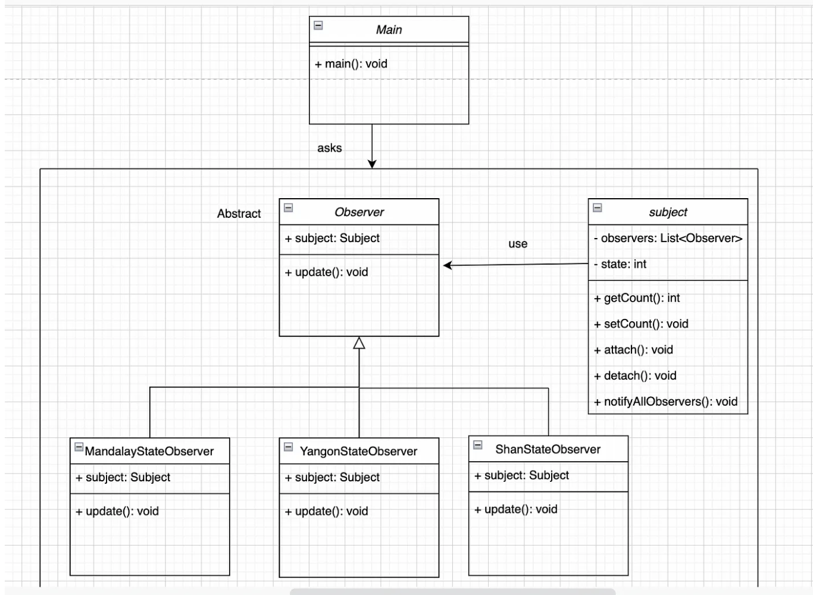

What is the observer design pattern ?
Observer design pattern ကတော့ behavioral design pattern တွေထဲက တခုဖြစ်ပါတယ် observer pattern အဓိက class သုံးခုပါပါတယ် Subject, Observer နဲ့ Client ပါ observer pattern က object တွေကြားမှာ one-to-many relationship မျိုးထားချင်တဲ့ချိန်မျိုးမှာသုံးပါတယိ ဆိုလိုတာက object တခုခုကို modified လုပ်လိုက်တာ နဲ့ သူရဲ့ dependent object တွေကို notified လှမ်းလုပ်တာမျိုးပါ MVC ( model-view-controller )framework က observer pattern ကိုဘဲသုံးထားတာပါ model က subject အနေနဲ့အလုပ်လုပ်ပါတယ် view တွေကတော့ observer တွေအနေနဲ့ပါ jave message service ကလဲ observer pattern လေးကိုဘဲသုံးထားပါတယ် Subject ကတော့ observer နဲ့ client ကြားမှာ attach or detach လုပ်ဖိုပါ အောက်ကပုံမှာဆိုရင် observer နဲ့ MandalayStateObserver, ShanStateObserver ရယ်YangonStateObserver ကြားမှာ attach or detach လုပ်ဖိုသုံးပါတယ်subject ထဲမှာ observer list ကြီးပါပါတယ် သူရဲ့ state တခုခုပြောင်း လဲမှုဖြစ်တိုင်း attach လုပ်ထားတဲ့ observer တွေကို notify လုပ်ပါတယ် observer သုံး ခုရဲ့ update function တွေကိုသွားခေါ်ပါတယ် အောက်က example code လေးကတော့ total vote count တခုခုပြောင်းတိုင်း state တခုချင်းစီမှာ total vote count ပြောင်းကြောင်း notify လုပ်ပီးတော့ print ထုတ်ထားတာပါ

Subject.java
package ObserverPattern;
import java.util.ArrayList;
import java.util.List;
public class Subject {
private List observers = new ArrayList();
private int count;
public int getVoteCount() {
return count;
}
public void setVoteCount(int count) {
this.count = count;
notifyAllObservers();
}
public void attach(ObserverPattern.Observer observer) {
observers.add(observer);
}
public void detach(ObserverPattern.Observer observer) {
observers.remove(observer);
}
public void notifyAllObservers() {
for (ObserverPattern.Observer observer : observers) {
observer.update();
;
}
}
}
Observer.java
package ObserverPattern;
public abstract class Observer {
protected Subject subject;
public abstract void update();
}
MandalayStateObserver.java
package ObserverPattern;
public class MandalayStateObserver extends Observer {
public MandalayStateObserver(Subject subject) {
this.subject = subject;
this.subject.attach(this); // attach observer to subject
}
@Override
public void update() {
System.out.println(
“It is Mandalay State and total vote count is : “ + subject.getVoteCount());
}
}
ShanStateObserver.java
package ObserverPattern;
public class ShanStateObserver extends Observer {
public ShanStateObserver(Subject subject) {
this.subject = subject;
this.subject.attach(this);
}
@Override
public void update() {
System.out.println(
“It is Shan State and total vote count is : “ + subject.getVoteCount());
}
}
YangonStateObserver.java
package ObserverPattern;
public class YangonStateObserver extends Observer {
public YangonStateObserver(Subject subject) {
this.subject = subject;
this.subject.attach(this);
}
@Override
public void update() {
System.out.println(
“It is Yangon State and total vote count is : “ + subject.getVoteCount());
}
}
Main.java
package ObserverPattern;
public class Main {
public static void main(String[] args) {
Subject subject = new Subject();
new MandalayStateObserver(subject);
new ShanStateObserver(subject);
new YangonStateObserver(subject);
System.out.println(“First state change: 100”);
subject.setVoteCount(100); // update vote count
System.out.println(“Second state change: 200”);
subject.setVoteCount(200);
}
}